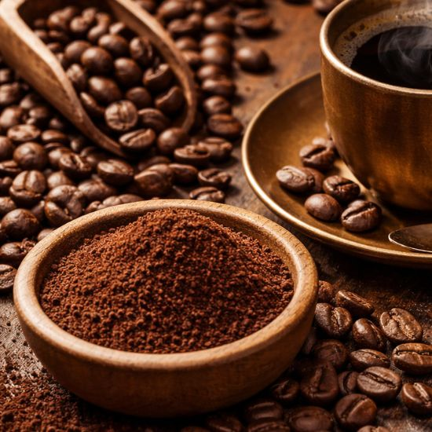

Farm-Grown — Nature Blends from the Hills of Wayanad
Our coffee is cultivated in the lush hills of Wayanad, a serene hill station known for its rich greenery and fertile soil — offering the perfect natural conditions for growing high-quality coffee.
We use carefully selected Robusta beans, known for their bold character and rich aroma. Blended with chicory in the traditional 80:20 ratio, our coffee delivers signature strength, smooth texture, and a lingering taste that coffee lovers cherish.

Our Goal
At NatureWyn, we are passionate about what we do — from cultivation to crafting the perfect blend. Our goal is simple: to bring you a cup of coffee that reflects the purity of nature and the warmth of tradition. We truly hope you enjoy our coffee as much as we enjoy creating it for you.
Get In TouchGet in Touch
